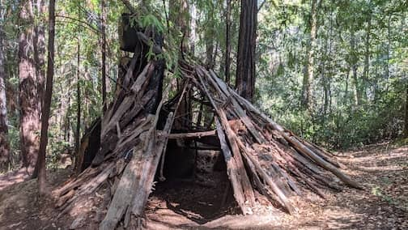
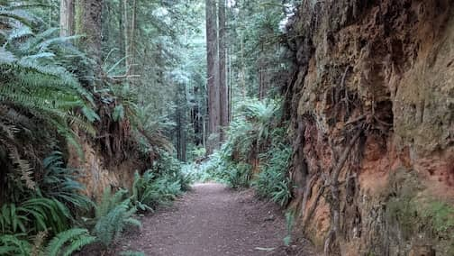
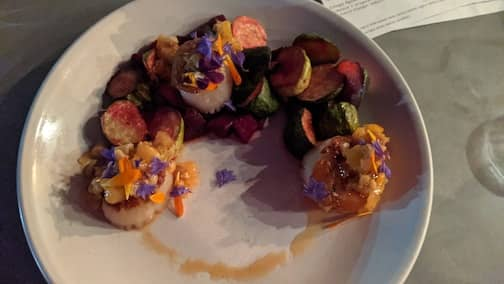
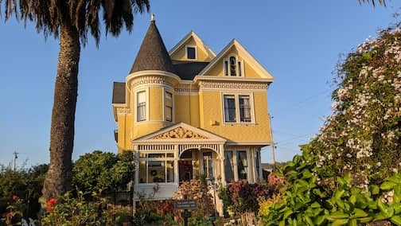

..
Camping in Hendy Woods SP and Arcata B&B
Sep 21 - 27.
We spent 3 nights camping at Hendy Wood State Park and 2 nights at a cute bed & breakfast in Arcata.
Sparkling wine tasting at Scharffenberger Cellars was fun, so was cider tasting at Gowan’s Orchard & Cidery.
 Hermit Hut at Hendy Wood SP
 Arcata Community Forest
 My scallop dinner at Salt Fish House, Arcata
 We stayed at the blue room